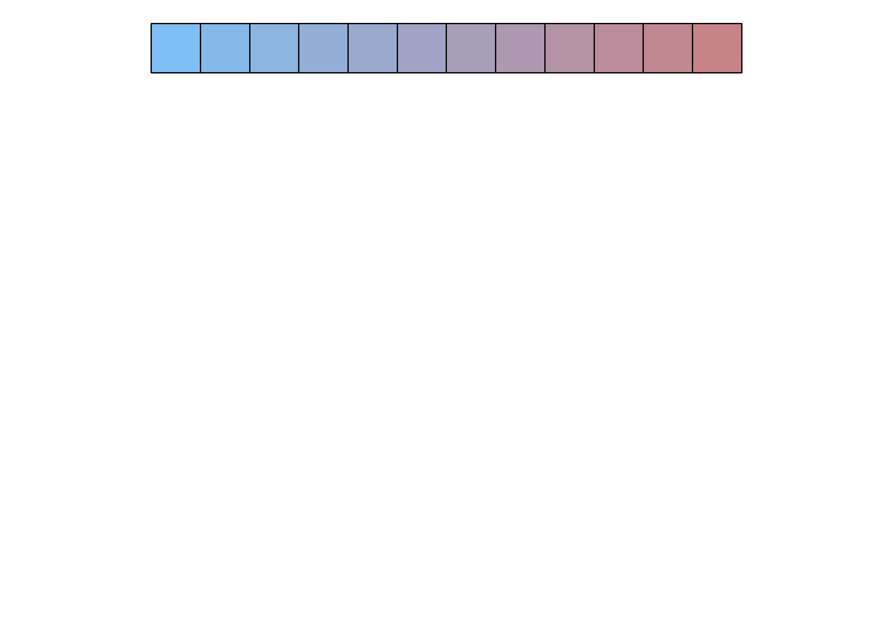

-- Attaching packages --------------------------------------- tidyverse 1.3.1 --v ggplot2 3.3.5 v purrr 0.3.4
v tibble 3.1.6 v dplyr 1.0.8
v tidyr 1.2.0 v stringr 1.4.0
v readr 2.1.2 v forcats 0.5.1Warning: package 'tibble' was built under R version 4.1.2Warning: package 'tidyr' was built under R version 4.1.2Warning: package 'readr' was built under R version 4.1.2Warning: package 'dplyr' was built under R version 4.1.2-- Conflicts ------------------------------------------ tidyverse_conflicts() --
x dplyr::filter() masks stats::filter()
x dplyr::lag() masks stats::lag()